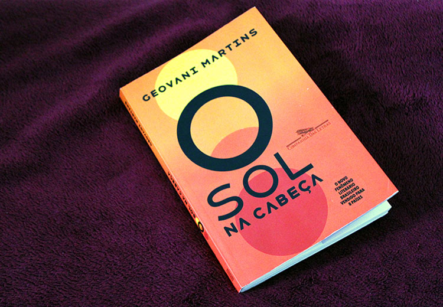
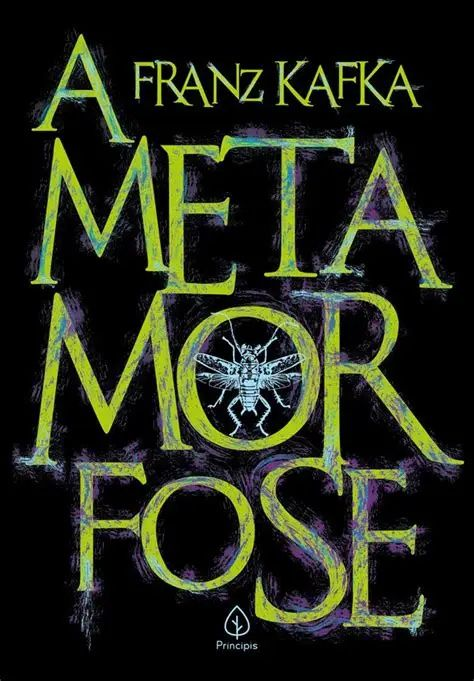
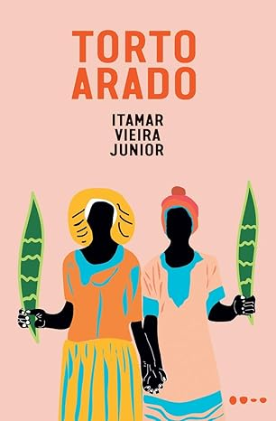
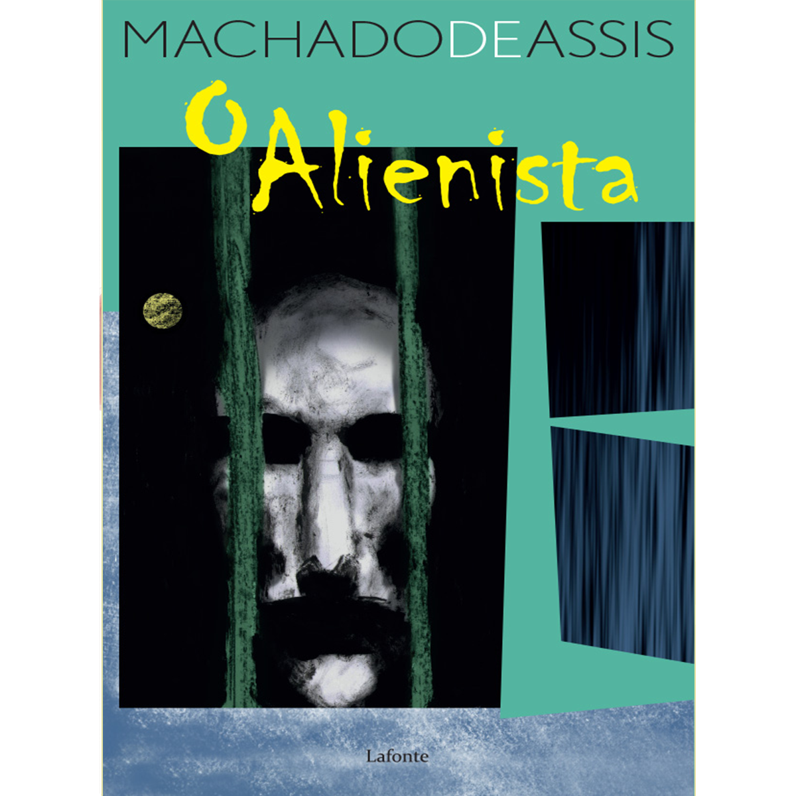
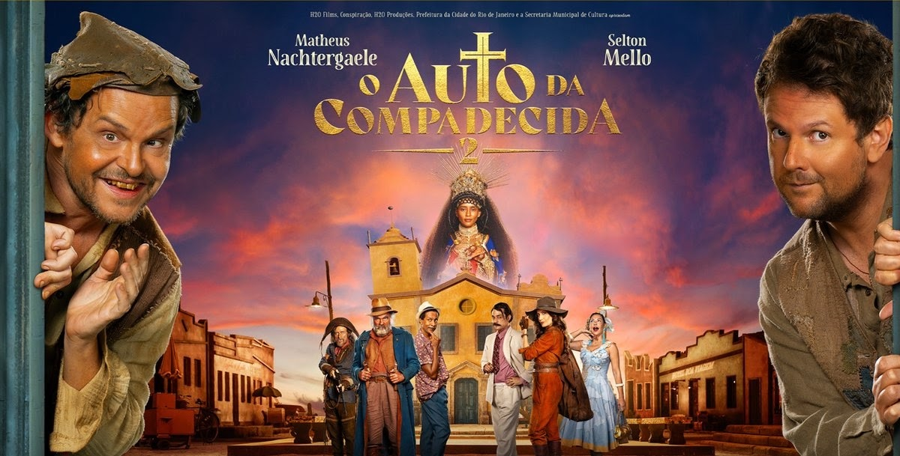
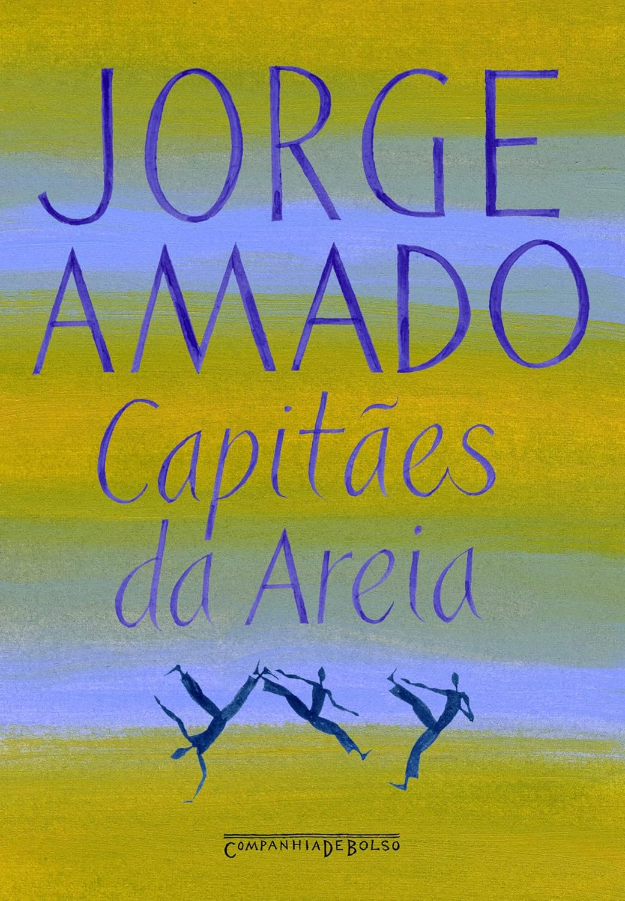
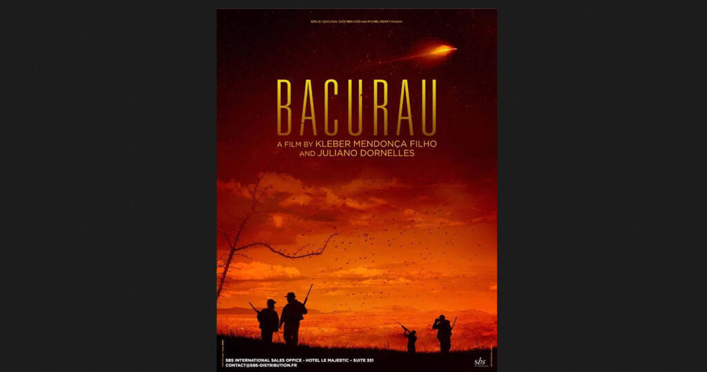

O Sol na Cabeça
Geovani Martins
Uma coleção vibrante de histórias sobre juventude, encontros e descobertas nas ruas do Rio de Janeiro.
Recomendações sob medida feitas com base nas suas preferências atuais

Geovani Martins
Uma coleção vibrante de histórias sobre juventude, encontros e descobertas nas ruas do Rio de Janeiro.
Anna Muylaert
Uma história sensível sobre família, trabalho e os limites invisíveis das relações dentro de casa.

Franz Kafka
Uma narrativa inquietante e inesquecível sobre mudança, identidade e pertencimento.

Itamar Vieira Junior
Uma história marcante sobre duas irmãs no sertão baiano e as marcas da terra e do trabalho.
Walter Salles
Uma jornada emocionante pelo interior do Brasil em busca de reconexão e esperança.

Machado de Assis
Uma sátira genial e atemporal sobre a razão, a loucura e as fragilidades da mente humana.

Guel Arraes
As aventuras astutas de João Grilo e Chicó que enfrentam os poderosos e o próprio diabo no sertão.
João Guimarães Rosa
Um mergulho profundo no sertão mineiro através do monólogo de Riobaldo sobre amor, violência e existência.
Fernando Meirelles e Kátia Lund
A trajetória de jovens no Rio de Janeiro acompanhada pelo olhar do fotógrafo Buscapé.

Jorge Amado
A vida de um grupo de crianças abandonadas que sobrevivem nas ruas de Salvador.

Kleber Mendonça Filho e Juliano Dornelles
Os moradores de um pequeno povoado no sertão brasileiro descobrem que a comunidade sumiu dos mapas.
Acompanhe de perto suas metas literárias e audiovisuais do momento
Machado de Assis — Pág. 164 de 320
Adirley Queirós — 55 min de 93 min